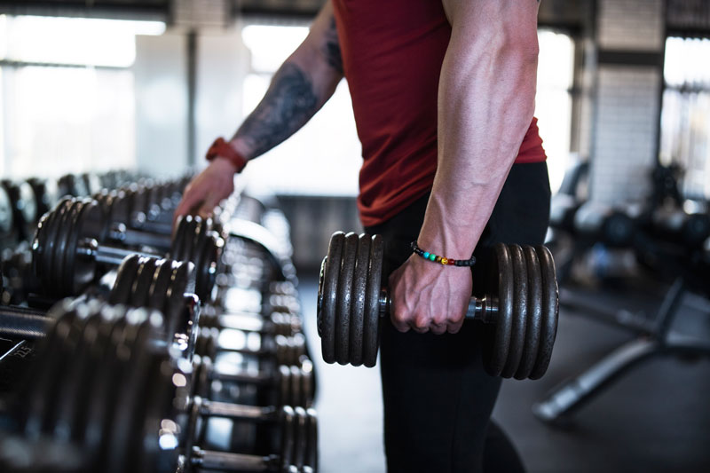

1. Giải đáp thắc mắc gym là gì?
Trước khi nghiên cứu về những lợi ích cực kỳ tuyệt vời của việc tập gym, chúng ta hãy cùng nhau giải đáp gym là gì? Không phải ai trong chúng ta cũng nắm được lịch sử hình thành của bộ môn gym.
Trên thực tế, bộ môn được hình thành và phát triển từ đất nước Hy Lạp, bởi vì người xưa luôn đề cao việc bảo vệ đất nước. Chính vì thế họ dành rất nhiều luyện tập để sở hữu sức khỏe dẻo dai, thân hình vạm vỡ giống như các vị thần trong thần thoại cực nổi tiếng.

Trong đó, tên gọi gym bắt nguồn từ “Gymnasium”, chúng có nghĩa là vận động thể thao để giữ dáng. Dần dần, bộ môn này trở nên phát triển và được du nhập vào hầu hết mọi quốc gia trên thế giới.
Ban đầu, các phòng tập có quy mô nhỏ, số lượng người tham gia chưa thực sự nhiều. Sau một thời gian, rất nhiều phòng tập chuyên nghiệp ra đời với những trang thiết bị hiện đại, đáp ứng những bài tập khác nhau. Đặc biệt, bộ môn này đã trở nên phổ biến và được ưa chuộng tại rất nhiều quốc gia, trong đó có Việt Nam.
2. Mục đích khi tập gym là gì?
Chắc hẳn nhiều bạn thắc mắc vậy mục đích khi tập gym là gì? Như bạn đã biết đây là hình thức được đông đảo mọi người lựa chọn. Mục đích chính khi tham gia luyện tập đó là duy trì vóc dáng thon thả, săn chắc, sức khỏe dẻo dai. Bên cạnh đó, sau khi tập, gymer sẽ cảm thấy thoải mái, vui vẻ, giải tỏa hết những căng thẳng, mệt mỏi trong cuộc sống.
Tùy vào mục tiêu giảm hoặc tăng cân, mọi người sẽ lựa chọn các bài tập phù hợp và đem lại những hiệu quả rõ rệt. Có thể nói, bài tập luyện khá đa dạng, phong phú, bạn có thể tìm hiểu và áp dụng những bài chuyên sâu tác động vào nhóm cơ cụ thể.
3. Những lợi ích tuyệt vời khi tham gia tập gym
3.1. Giúp cơ bắp săn chắc
Một trong những mục đích chính khi mọi người lựa chọn bộ môn thể thao này đó là phát triển cơ bắp săn chắc hơn. Rất nhiều nghiên cứu đã chứng minh rằng bài tập gym có tác dụng kích thích sản sinh hormone, nhờ vậy cơ bắp có thể hấp thụ được lượng axit amin cần thiết và trở nên săn chắc hơn.
Nếu như bạn mong muốn sở hữu thân hình vạm vỡ, cơ bắp chắc khỏe, hãy nghiên cứu và dành thời gian thực hiện các bài tập phù hợp. Chắc chắn, bạn sẽ bất ngờ với thành quả sau một thời gian kiên trì.
3.2. Giảm cân hiệu quả
Rất nhiều nghiên cứu khoa học đã chỉ ra rằng tập gym nói riêng và luyện tập thể thao nói chung giúp cơ thể dẻo dai, sức khỏe tốt hơn hẳn. Nếu bạn xây dựng chế độ luyện tập khoa học, phù hợp với thể lực thì cân nặng, sức khỏe luôn được duy trì ở mức ổn định.
Đồng thời, những người thường xuyên vận động sẽ hạn chế nguy cơ mắc hội chứng mệt mỏi cũng như mắc một số căn bệnh mãn tính nguy hiểm. Chính vì vậy chúng ta nên tạo thói quen tập thể thao thường xuyên.
3.4. Cải thiện tinh thần
Từ trước đến nay, mọi người chỉ nghĩ rằng thể dục thể thao giúp cơ thể săn chắc, dẻo dai và duy trì sức khỏe ổn định. Trên thực tế, tập gym còn đem lại những lợi ích tuyệt vời đối với tinh thần.
Sau những ngày làm việc, học tập căng thẳng, mệt mỏi, chúng ta rất dễ bị stress, trầm cảm. Cách tốt nhất để giải tỏa lo âu, mệt mỏi đó là tập luyện thể dục thể thao. Đó là lý do vì sao sau khi tìm hiểu gym là gì, mọi người đều hứng thú và duy trì thói quen luyện tập bộ môn này.
4. Những điều tối kỵ khi đi tập gym
Để đạt hiệu quả cao nhất chúng ta cần nắm được những điều tối kỵ khi tập gym là gì để tránh mắc phải.
4.1. Bắt chước người khác mà không tìm hiểu
Khi mới “nhập môn”, một số bạn có xu hướng bắt chước bài tập của những người khác mà không dành thời gian nghiên cứu, tìm hiểu. Điều này có thể ảnh hưởng tiêu cực đến cơ bắp và không đem lại hiệu quả rõ rệt.
Nếu như bạn không hiểu gym là gì, luyện tập không đúng kỹ thuật thì chúng ta đối mặt với nguy cơ bị tổn thương các nhóm cơ. Tốt nhất, các bạn hãy xác định mục tiêu luyện tập, nghiên cứu kỹ các bài tập hoặc thực hiện rèn luyện dưới sự hướng dẫn, theo dõi của PT chuyên nghiệp.

4.2. Che dấu yếu điểm của mình
Một thói quen của người Việt Nam đó là “giấu dốt”, ngay cả khi luyện tập thể thao chúng ta cũng che dấu những điểm yếu của mình. Nhiều bạn cảm thấy tự ti về ngoại hình của bản thân, sợ mọi người chú ý nên luôn tỏ ra ngại ngùng.
Nếu không thực sự quyết tâm rèn luyện, bạn sẽ khó duy trì chế độ luyện tập phù hợp và chẳng thể đạt được mục tiêu. Chính vì thế chúng ta hãy bỏ đi sự tự ti, tập trung luyện tập để cải thiện yếu điểm của bản thân.
Chắc hẳn sau bài viết này bạn đã phần nào hiểu được gym là gì cũng như những lợi ích tuyệt vời chúng đem lại người luyện tập. Các bạn hãy nghiên cứu thật kỹ, xây dựng kế hoạch tập gym khoa học để đạt được mục tiêu, hiệu quả cao nhất. Nếu là người mới bắt đầu, chúng ta có thể xin lời khuyên từ các chuyên gia có kinh nghiệm để tránh chấn thương ngoài ý muốn.